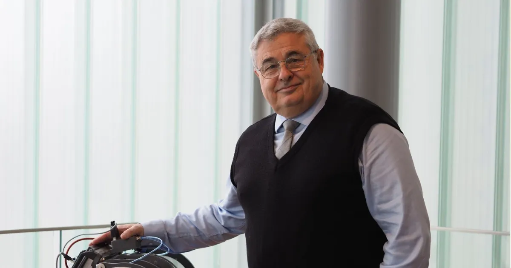
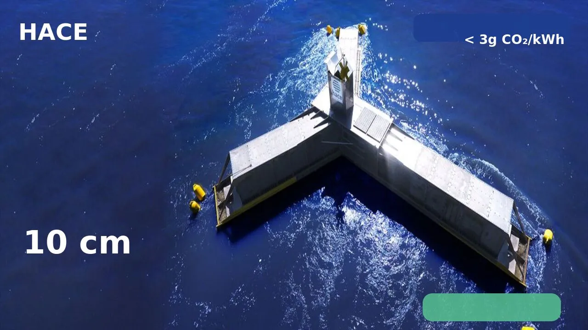
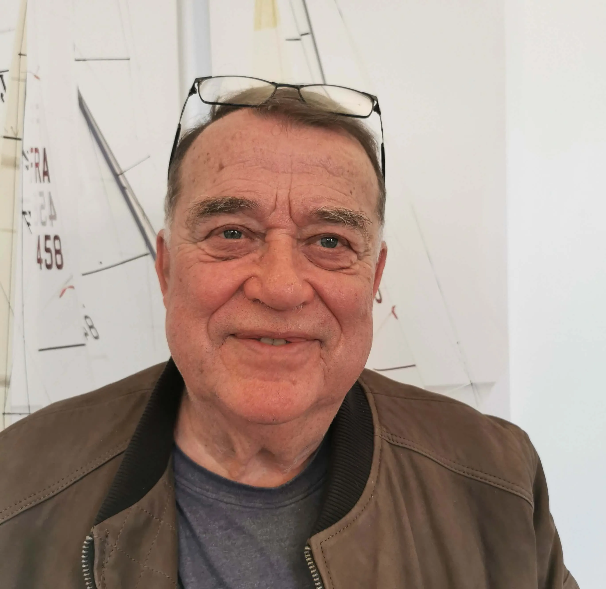
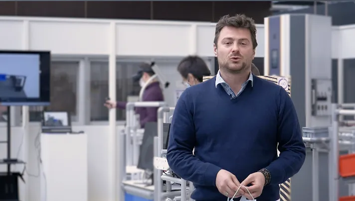
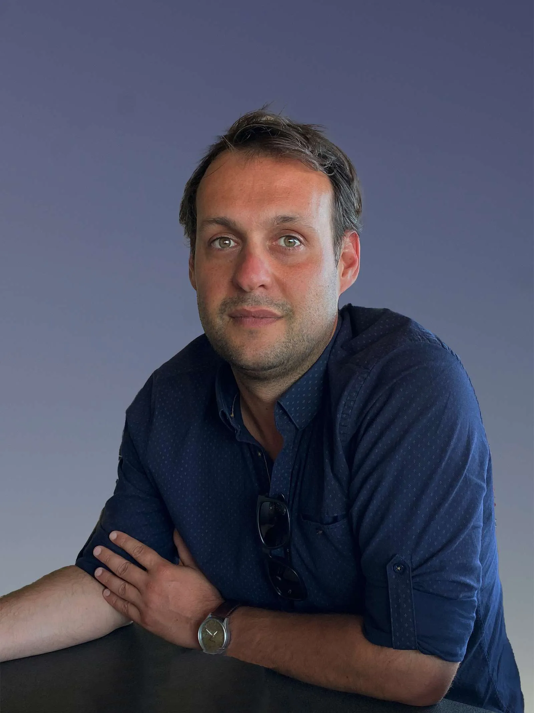
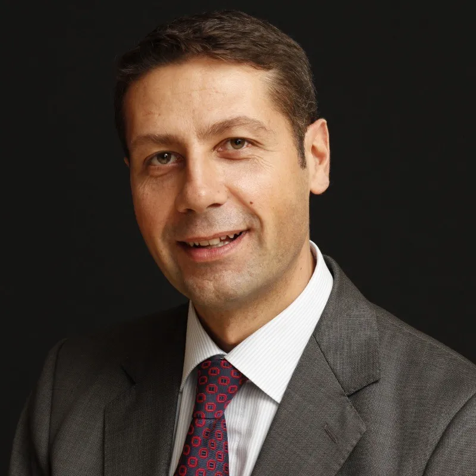
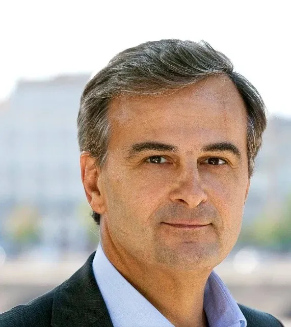
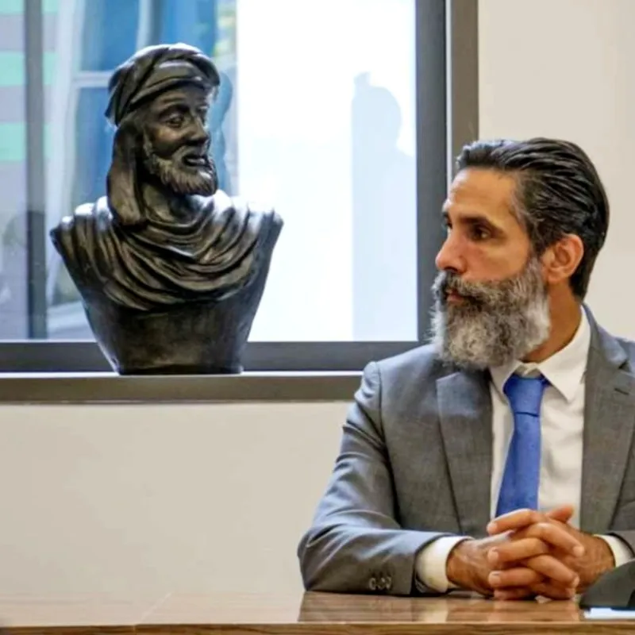
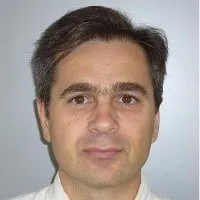

Dr. Jean-Luc Stanek
Presiden Eksekutif / CEO
Ksatria Kehormatan Maritim
Kami mengubah gelombang laut menjadi listrik. Bersih, kompetitif, tersedia 24/7.
Tiga terobosan mendasar yang mengubah persamaan ekonomi energi gelombang laut.
Konverter energi gelombang saat ini tidak mampu beradaptasi dengan kondisi gelombang yang bervariasi. Dirancang untuk rentang sempit, performanya rendah di laut tenang dan berhenti di laut ganas. Hasilnya: faktor kapasitas rendah dan biaya energi yang tidak pernah turun.
Setiap sistem dirancang khusus untuk lokasi spesifiknya untuk memaksimalkan faktor kapasitas — kunci kelayakan ekonomi. Biaya listrik rendah adalah konsekuensi langsung dari pendekatan ini.
Intermiten adalah kelemahan utama semua energi terbarukan: surya, angin, dan konverter gelombang saat ini semuanya berhenti atau masuk mode perlindungan begitu kondisi melebihi rentang operasinya. Setiap jam waktu henti menurunkan faktor kapasitas dan membuat model bisnis tidak berkelanjutan.
HACE berproduksi dalam kondisi terburuk — siklon, gelombang raksasa, tsunami. Semakin ganas laut, semakin tinggi output-nya. Sistemnya tidak dapat tenggelam dan dirancang untuk bertahan lebih dari 50 tahun.
Kompleksitas beberapa konverter energi gelombang menghalangi penerapan massal. Mereka membutuhkan peralatan berat dan mahal — derek berkapasitas tinggi, kapal khusus, komponen kustom.
HACE dapat dibangun di galangan kapal mana pun, tanpa peralatan berat. Kolom air berosilasi dari baja standar, pendekatan produksi massal industri. Lebih dari 95% dapat didaur ulang.
Gelombang 10 cm. Turbin berputar penuh.



Energi gelombang menjawab pasar yang konkret, layak kredit, dan terus tumbuh di setiap garis pantai di dunia.
Potensi teoritis yang diestimasi oleh IEA. Konsumsi listrik global sekitar 25.000 TWh/tahun. Energi gelombang saja bisa memenuhi permintaan tersebut.
Pulau, daerah pesisir, negara berkembang: permintaan struktural untuk energi dekarbonisasi dan air tawar melalui desalinasi.
Regulasi IMO dan UE sedang berlangsung. HACE menyediakan energi "Absolute Zero" untuk pelabuhan, bunkering H₂, dan daya pantai.
Wilayah kepulauan (biaya diesel 300-500€/MWh), pantai Atlantik Eropa, garis pantai Afrika, Karibia, dan Pasifik Selatan.
HACE dan mitranya SHZ menyatukan dua mata rantai yang hilang untuk menjadikan hidrogen hijau kompetitif dalam skala besar: energi non-intermiten sangat rendah karbon, dan penyimpanan revolusioner.
Energi stabil, non-intermiten, sangat rendah karbon (mulai 15€/MWh, < 3g eqCO₂/kWh) untuk menggerakkan elektroliser secara terus-menerus.
Elektroliser dioperasikan oleh klien industri atau mitra bersertifikat. HACE menyediakan energi ideal untuk mengoperasikannya pada kapasitas penuh, terus-menerus, dengan biaya serendah mungkin.
Tangki H₂ 20× lebih ringan dari yang ada: 1 ton tangki per 1 ton H₂ yang diangkut. Mitra yang dipilih oleh NASA untuk pesawat hidrogen masa depan.
Solusi pendukung untuk penggunaan H₂ hijau. Dekarbonisasi transportasi darat, laut, dan udara.
Aliansi global 50+ aktor. HACE menyediakan energi "Absolute Zero" untuk kapal dan pelabuhan.
Menghilangkan faktor utama penyebab erosi pantai dengan menggeser fase orbital molekul air.
Mendorong pengisian ulang sedimen pantai secara alami, tanpa intervensi buatan.
Tanpa cairan pencemar, tanpa beton, penambatan bio-dinamis. Dampak positif pada keanekaragaman hayati.
Energi + perlindungan pantai mengurangi biaya per penggunaan. Tanggul terapung, marina, instalasi pesisir.
"Teknologi HACE terintegrasi sempurna dalam strategi transisi energi pelabuhan kami. Penerimaan sosial dan penghormatan terhadap keanekaragaman hayati adalah aset utama."
"Listrik dihasilkan menggunakan teknologi energi gelombang HACE, bahkan saat gelombang sangat rendah. Uji coba ini tampak menjanjikan untuk fase pertama ini."
"HACE melangkah lebih jauh dengan menyediakan air tawar dan mencegah erosi pantai. ZESTAs senang bermitra dengan visioner yang menangani mitigasi dan adaptasi perubahan iklim dalam satu teknologi."
"Sebagai profesional laut, kami melihat HACE sebagai solusi yang kompatibel dengan aktivitas kami. Perlindungan pantai adalah bonus yang luar biasa."
"Listrik dan hidrogen dari gelombang laut. Teknologi Prancis dalam proses industrialisasi."
HACE menggunakan prinsip Kolom Air Berosilasi Multipel. Gelombang memasuki ruang terbuka di bawah air, mengompresi udara melalui katup satu arah, menciptakan aliran udara kontinu yang menggerakkan turbin. Sistem bekerja seperti mesin piston yang digerakkan gelombang, dioptimalkan di seluruh spektrum ombak.
Ya. HACE menangkap energi dari semua gelombang, bahkan yang kacau, dari 5 cm hingga lebih dari 30 m. Tidak dapat tenggelam, tahan terhadap siklon, gelombang raksasa, dan tsunami. Masa pakai tervalidasi lebih dari 50 tahun melalui perhitungan dan simulasi numerik.
Di bawah 3g eqCO₂/kWh sepanjang siklus hidup penuh. Perbandingan: surya ~40g, angin ~11g, nuklir ~6g. HACE mencapai ini melalui konstruksi baja 95% dapat didaur ulang, tanpa beton.
LCOE mulai dari 15€/MWh untuk pembangkit besar yang berlokasi strategis (Laut Utara, Iroise). Seperti surya atau angin, harga akhir tergantung pada ukuran instalasi, lokasi, dan koneksi jaringan. Faktor kapasitas tinggi (50-90% tergantung lokasi) dan desain khusus lokasi adalah kunci daya saing ini.
Produksi stabil non-intermiten ideal untuk elektroliser kontinu. Hasilnya: H₂ hijau di bawah 2€/kg. Bermitra dengan SHZ (penyimpanan 20x lebih ringan) dan H2X (ekosistem penggunaan akhir).
Dampak minimal: tanpa beton, tanpa cairan pencemar, kurang dari 5 m di atas air, penambatan bio-dinamis. Bonus: perlindungan aktif terhadap erosi pantai dan pengisian ulang pantai secara alami.
Insinyur, pakar lepas pantai, keuangan, dan industri — tim multidisiplin untuk transisi energi kelautan.

Presiden Eksekutif / CEO
Ksatria Kehormatan Maritim

Direktur R&D
Ex-Airbus · Ahli aerodinamika

Ahli R&D

Ahli operasi lepas pantai

Ahli keuangan & investor

Ahli hukum

Ahli industri
Direktur komersial

Direktur TI & Keamanan Siber
Investor, mitra industri, komunitas: bergabunglah dengan proyek HACE.
Presiden Eksekutif / CEO — Ksatria Kehormatan Maritim